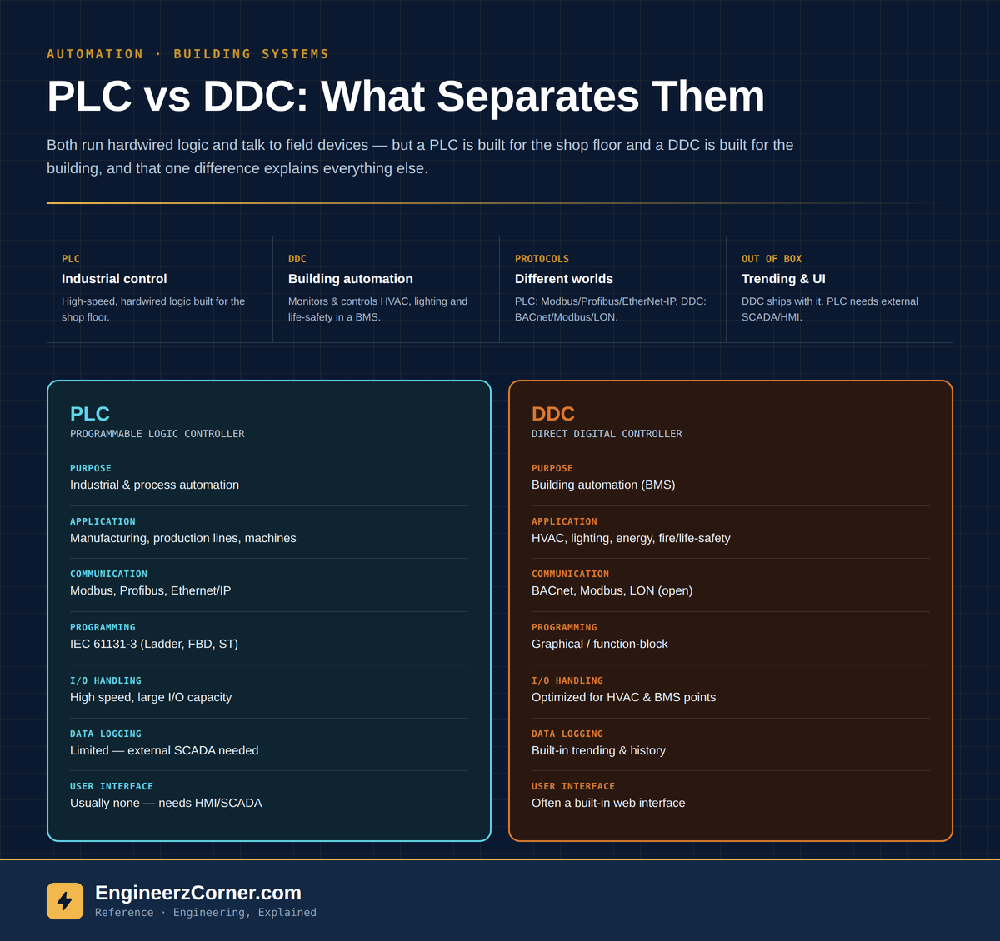

Same idea, different job

Same building blocks, different jobs — a PLC built for the shop floor next to a DDC built for the building.
A PLC (Programmable Logic Controller) is an industrial controller built for machine and process automation — reading sensors, driving actuators, and executing hardwired logic fast enough to keep up with a production line. It's designed to survive the shop floor: vibration, electrical noise, temperature swings, and cycle times measured in milliseconds.
A DDC (Direct Digital Controller) is a building automation controller, the workhorse inside a BMS (Building Management System). Instead of running a conveyor or a packaging line, it's monitoring and controlling HVAC equipment, lighting, and building services — loads that change over minutes, not milliseconds, and where the priority shifts from raw speed to easy integration, trending, and remote monitoring across an entire facility.
Purpose and typical application
This is the real dividing line. A PLC's world is manufacturing — production lines, packaging machines, conveyor systems, batch processes — anywhere a process needs deterministic, high-speed control. A DDC's world is the building itself: AHUs, chillers, VAV boxes, lighting circuits, and increasingly fire and life-safety integration, all coordinated as one system rather than one machine.
Communication: proprietary-industrial vs open-BMS
PLCs typically run Modbus, Profibus, or Ethernet/IP — protocols built around deterministic, high-throughput industrial networks, often with a specific vendor ecosystem behind them. DDCs are built around open protocols made for building integration: BACnet, Modbus, and LON, chosen specifically so equipment from different manufacturers can sit on the same BMS network and talk to a common front end.
Side by side
| Parameter | PLC | DDC |
|---|---|---|
| Purpose | Industrial & process automation | Building automation (BMS) |
| Typical application | Manufacturing, production lines, machines | HVAC, lighting, energy, fire/life-safety integration |
| Communication | Modbus, Profibus, Ethernet/IP (proprietary/industrial) | BACnet, Modbus, LON (open protocols) |
| Programming | IEC 61131-3 (Ladder, FBD, ST, etc.) | Graphical / function-block (easy for BMS applications) |
| I/O handling | High speed, large I/O capacity | Optimized for HVAC & building control points |
| Data logging | Limited — external SCADA needed | Built-in trending & history |
| User interface | Usually no web UI — needs HMI/SCADA | Often comes with a built-in web interface |
| Industry focus | Industrial automation | Building management systems |
Picking the right one
- 1Controlling a production line, packaging machine, or any process needing millisecond-scale, deterministic response? That's PLC territory.
- 2Monitoring and coordinating HVAC, lighting, and building services across a facility, with trending and a BMS front end? That's a DDC job.
- 3Need open, multi-vendor integration on one network — BACnet in particular? Lean DDC over PLC even if the load itself is simple.
- 4Need raw I/O count and speed for a tightly cycled process, with logging handled by a separate SCADA layer? Lean PLC.
- 5Large campuses sometimes use both — PLCs at the process/utility plant level, DDCs across the building floors, bridged through a common BMS.
Key takeaways
- ✓Use a PLC for industrial and process control applications.
- ✓Use a DDC for building automation and HVAC control in BMS projects.
- ✓The protocol and programming differences aren't arbitrary — they follow directly from what each controller was built to talk to.
- ✓Right controller for the right application gives better performance and reliability than forcing one to do the other's job.